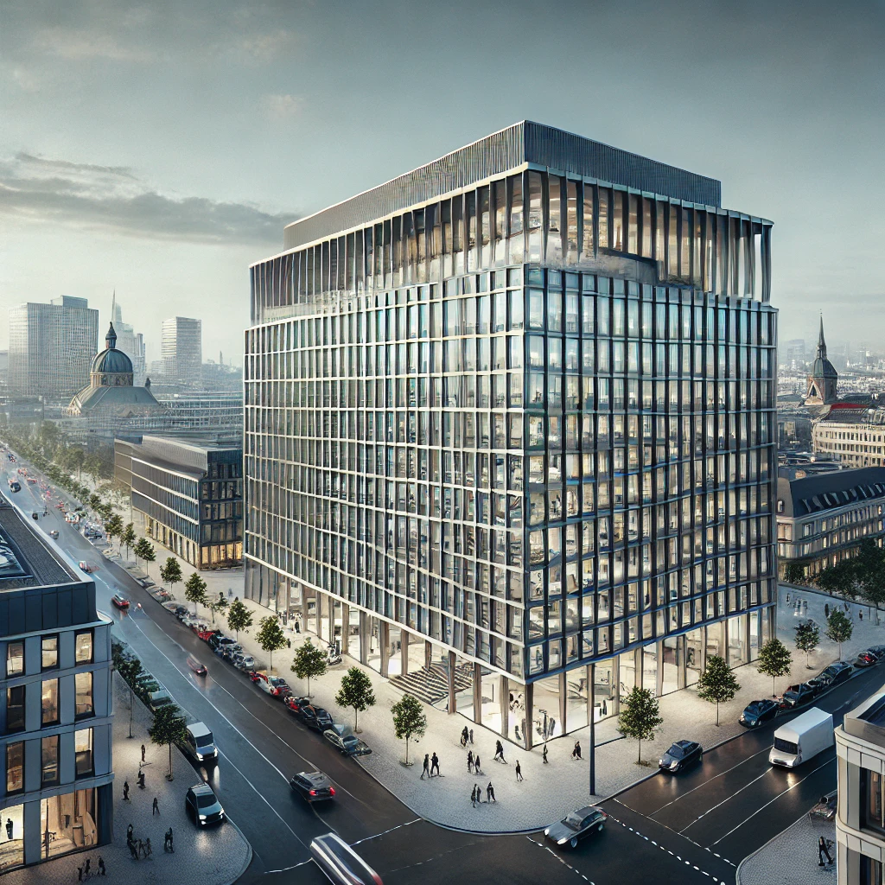
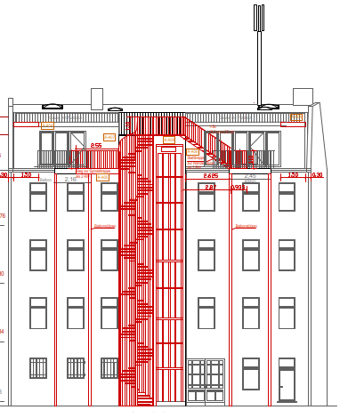

Unsere Referenzen
Zurück zur HauptseiteProjekt 1: Neubau eines Bürogebäudes
Dieses Projekt umfasst die Tragwerksplanung eines modernen Bürogebäudes im Stadtzentrum. Das Gebäude bietet 12.000 Quadratmeter Bürofläche und wurde in nur 18 Monaten fertiggestellt.
Projekt 2: Sanierung eines historischen Hauses
Bei diesem Projekt handelte es sich um die komplexe Sanierung eines 1895 erbauten historischen Hauses. Die Tragwerksplanung erforderte eine besondere Berücksichtigung der originalen Baumaterialien und Bauweise.
Projekt 3: Erweiterung einer Fluchttreppe
Im Rahmen der Nutzungsänderung eines Gebäudes wurde eine bestehende Fluchttreppe modifiziert. Die Erweiterung umfasste den Einbau von fünf Treppenläufen mit Geländern und vier Zwischenpodesten. Dank unserer langjährigen Erfahrung im Stahlbau konnte eine konstruktionstechnisch präzise und montagefreundliche Lösung entwickelt werden, die alle Brandschutzanforderungen erfüllt. Unsere Leistungen umfassten den Entwurf, die statische Berechnung sowie die Werkplanung für die Fertigung der einzelnen Bauteile. Sämtliche Pläne wurden aus einem zentralen 3D-Modell abgeleitet, was für eine hohe Genauigkeit und Fehlerfreiheit sorgte.